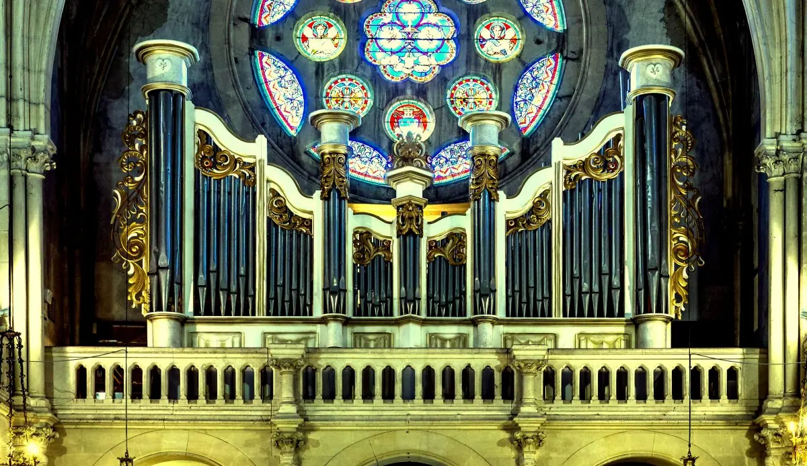
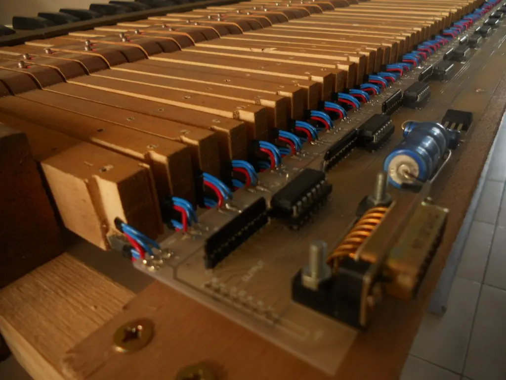

Quand l'orgue ouvre l'avenir
Un grand orgue conçu et construit par un passionné, des récitals chaque dimanche, des mariages en musique et une technologie née à Rians.
Un orgue construit à la main, offert à tous
De 2004 à 2011, Pascal Leray a conçu, construit et financé seul le grand orgue de l'église de Rians, sans subvention.
Cinq claviers, plus d'un millier de tuyaux, une console mobile pour jouer depuis la nef : l'instrument réunit l'art de la facture d'orgue et l'électronique moderne. L'association des Amis de l'orgue le fait vivre, l'entretient et l'ouvre au public.
Découvrir l'association
L'orgue de Rians
Votre mariage, en orgue et en voix
Anne-Marie, soprano, et Pascal, à l'orgue, animent votre cérémonie à Rians ou dans toute la France. Vos dons financent l'orgue et sont déductibles à 66 %.
Préparer ma cérémonieFaites vibrer l'orgue avec nous
Adhérent, bénévole, mécène ou simple auditeur : il y a une place pour vous.
Nous rejoindre ou soutenir